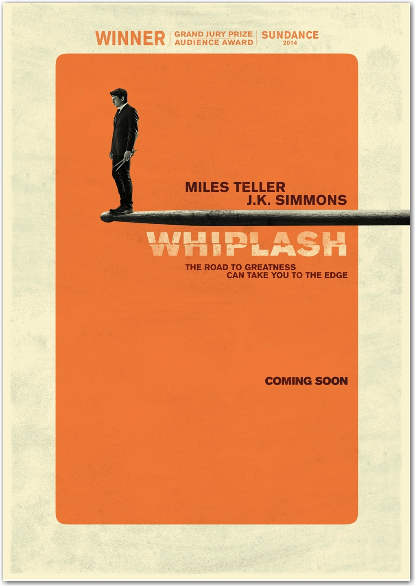
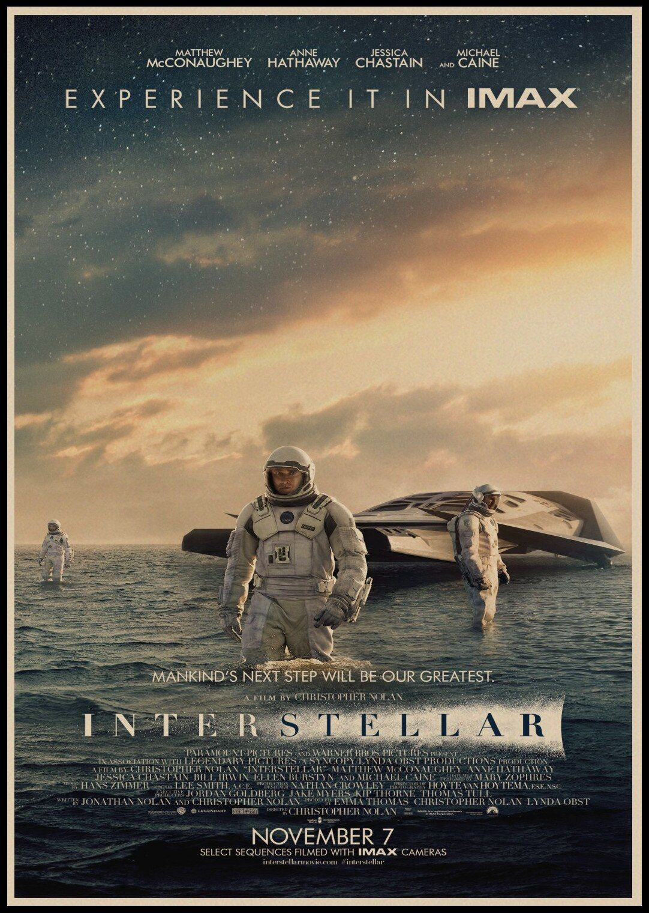
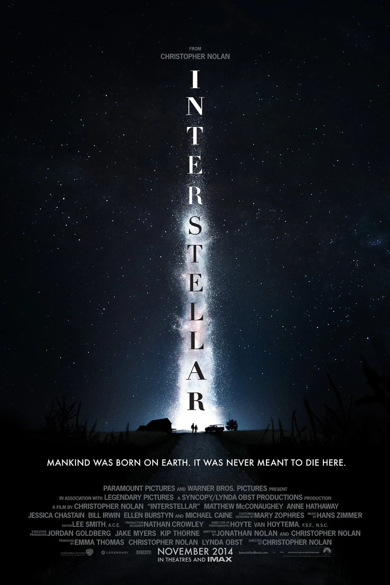
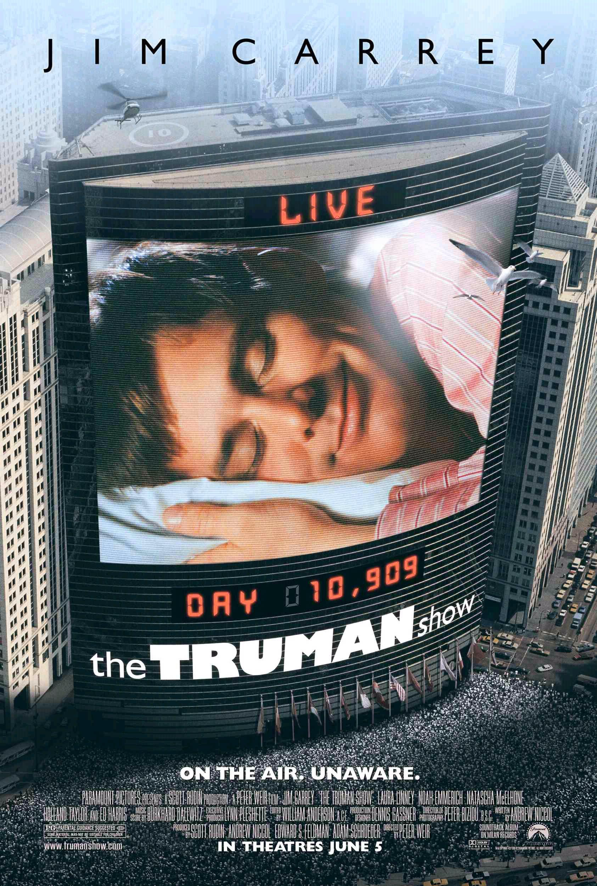
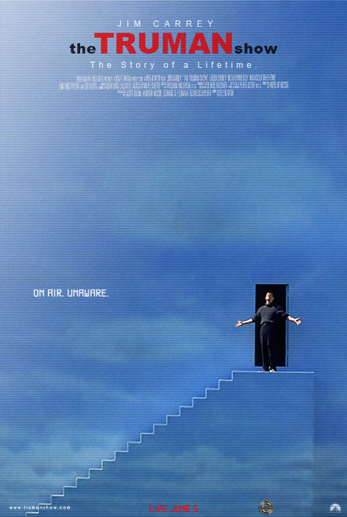
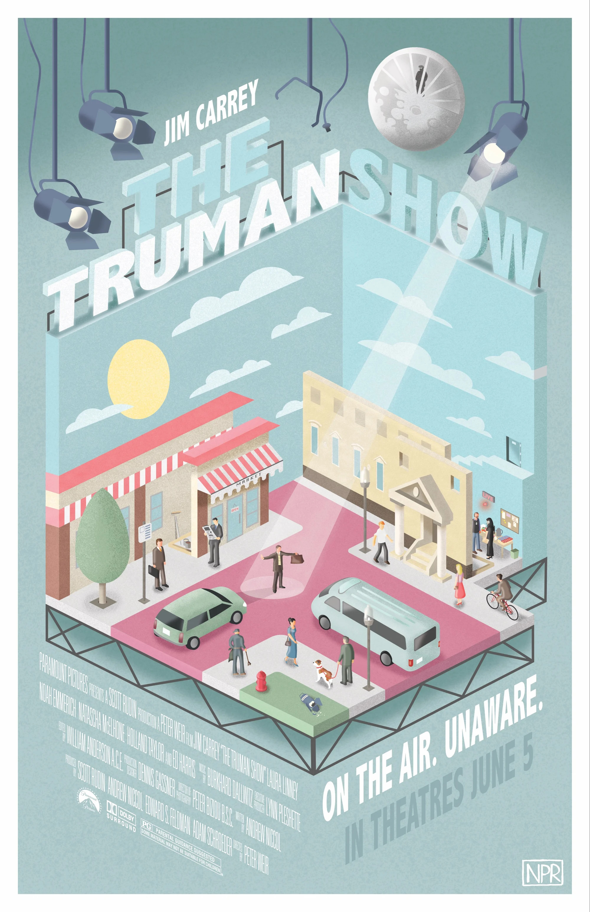
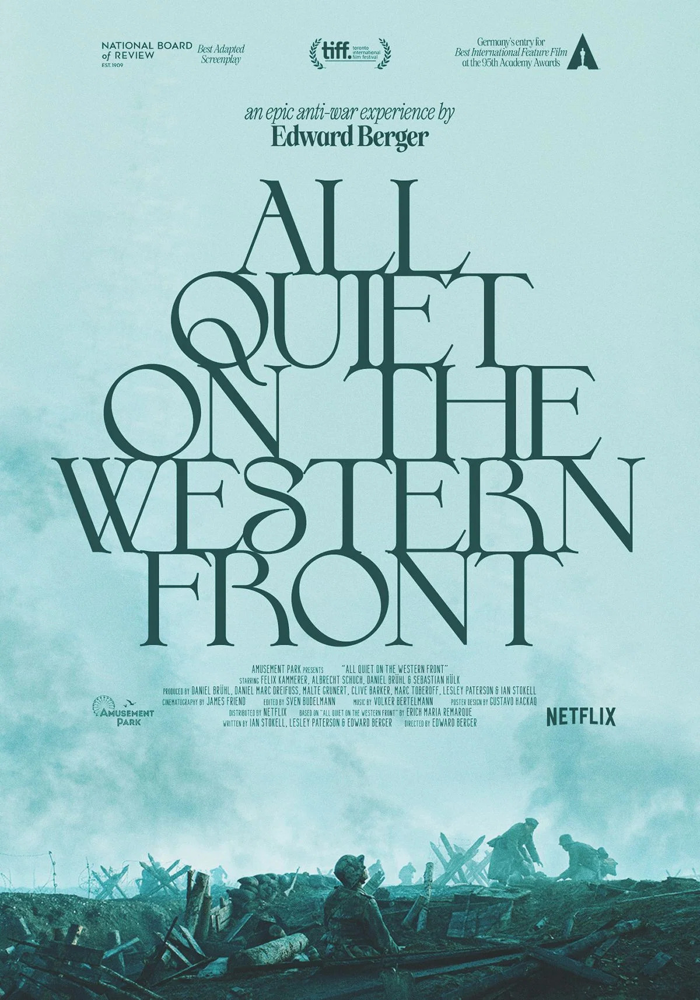
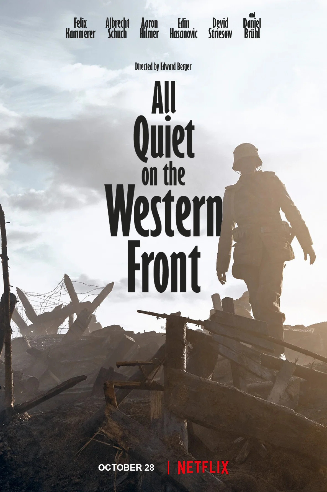
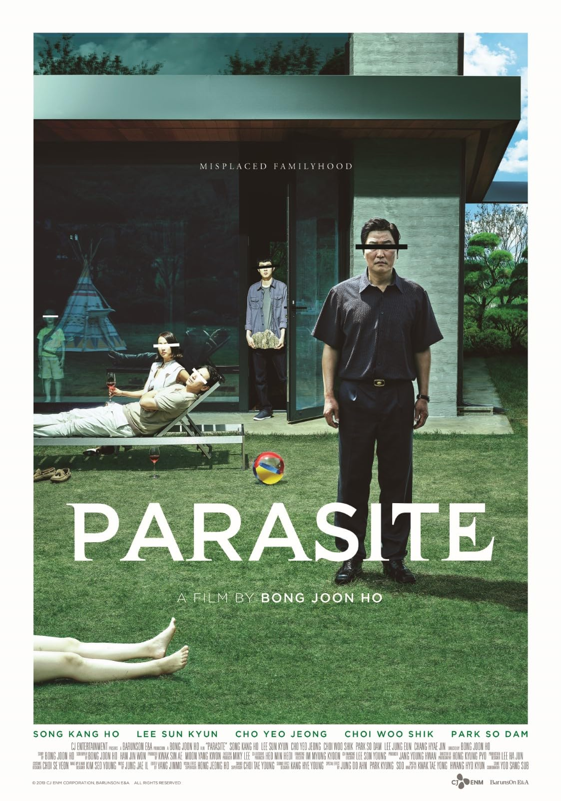
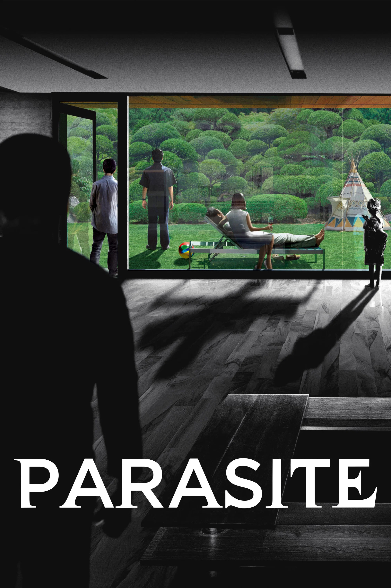

Here is a list of some of my favourite films...
↓
Whiplash (2014)
Drama, Music
Whiplash explores the potential dangers of pursuing greatness, particularly through Andrew's relationship with his abusive mentor. The film's stunning cinematography, combined with its incredible music, creates an intense and engaging experience. I especially enjoy how the music and visuals work together to capture the pressure and obsession that drive Andrew throughout the film.



Interstellar (2014)
Science Fiction, Drama, Adventure
I love Interstellar for its incredible visuals and the way it depicts black holes. The soundtrack is a masterclass in creating an immersive experience and drawing you further into the film. One of my favourite moments is on Miller's planet, where the feeling of dread builds as you realise that what first appear to be mountains are actually enormous waves.



The Truman Show (1998)
Drama, Comedy, Science Fiction
The premise of The Truman Show is fascinating, as it makes you wonder how someone's entire life could be broadcast without them knowing. I also love its exploration of reality, freedom, and consciousness as Truman slowly begins to question the world around him.


All Quiet on the Western Front (2022)
War, Drama
All Quiet on the Western Front does an incredible job of showing the horrors of war through the eyes of young soldiers. The constant dread and anxiety make the film difficult to watch, but that's also what makes its portrayal of war so powerful. The film also effectively shows the contrast between the young soldiers' expectations of war and the brutal reality they are forced to face.


Parasite (2019)
Thriller, Drama, Dark Comedy
Parasite explores class inequality by contrasting the wealthy Park family with the struggling Kim family. I appreciate how Bong Joon-ho uses the idea of a "parasite" to question which family is truly taking advantage of the other. I also enjoy how the film blends dark comedy with suspense, creating a story that is both entertaining and thought-provoking.
Movie Recommendations
Have a movie you think I should watch?